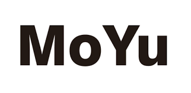

Esta marca, en el mundo de los cubos de Rubik es conocida por sus cubos de muy buena calidad, siendo estos de gamma media, sin pasar de los 30 € el cubo. Esta es una marca muy buena si te interesa empezar en el mundo de cubos de Rubik ya que debido a sus precios es buena tanto como para el coleccionismo, como para el SpeedCubing debido a que sus cubos ya empiezan a tener un tipo de regulación en la tensión entre caras.
Desde su fundación, MoYu se ha convertido en una persona influyente en la industria del juguete china. Ha crecido hasta convertirse en una empresa de juguetes educativos profesional y popular gracias a diseños notables, producción constante y ventas estables. Como empresa de gran escala orientada a la exportación, hemos hecho realidad nuestros sueños y hemos trabajado duro, con el único deseo de que más y más personas sean testigos de nuestra constante innovación y crecimiento.
Innovador con concentración y aspiración.
La creatividad es el motor y la base para el desarrollo de una empresa y también es el tema eterno de MoYu. Entre las palabras, está el estallido de inspiración; entre las exploraciones, está la valentía de la revolución. Nosotros y muchos aspirantes a diseñadores estamos explorando y cultivando nuevas ideas e innovaciones dentro de la industria del juguete.
Romper barreras hace avanzar, la innovación genera productos premium. Encima
30.000 metros cuadrados de espacio dedicado a la producción, equipos avanzados para la fabricación automatizada y trabajadores cualificados hacen de MoYu una realidad. Desarrollando y manteniéndonos al día con las tendencias, apuntamos a lo mejor. Producimos continuamente juguetes educativos premium y de alta calidad.
Creador persiguiendo la excelencia.
MoYu se destaca dentro de la industria del juguete educativo por sus productos y servicios de alta calidad. También es una de las primeras empresas en recibir la Certificación Obligatoria de China. Nuestros productos principales incluyen el cubo mágico, el cubo serpiente, bloques de construcción, vasos apilables, laberinto 3D y muchos otros productos. Estos productos son aptos para todas las edades y están destinados a desarrollar el conocimiento y la inteligencia de niños y adolescentes. También se pueden utilizar como un artículo fácil de transportar para brindar diversión.
Además, las marcas creadas por MoYu están llenas de energía e innovación (MoYu, Cubing Classroom, Cong’s Design, GuoGuan, MoJue, MoHuanShouSu,
LeTao, SenHuan, YanCheng). Siempre presentan la individualidad y singularidad de la Cultura MoYu. Nuestros productos son utilizados por muchos competidores de clase mundial y se han utilizado para batir nuevos récords mundiales. Asimismo, muchos cubers de alto rango se han unido al Equipo MoYu y se han convertido en portavoces de MoYu.
Trabajadores enérgicos y duros
Ganar confianza a través de la honestidad, destacar a través de la calidad, desarrollarse innovando. MoYu es una empresa enérgica y trabajadora que se está convirtiendo en una marca popular en la industria de los juguetes educativos.
Nunca paramos, esperamos más. Contribuimos a la creación de productos premium.
Exploradores mirando hacia el futuro
El futuro nos motiva a explorar continuamente. Avanzamos valientemente como unidad. MoYu creará más milagros y alcanzará logros, convirtiéndose en una estrella brillante en la industria mundial del juguete.
